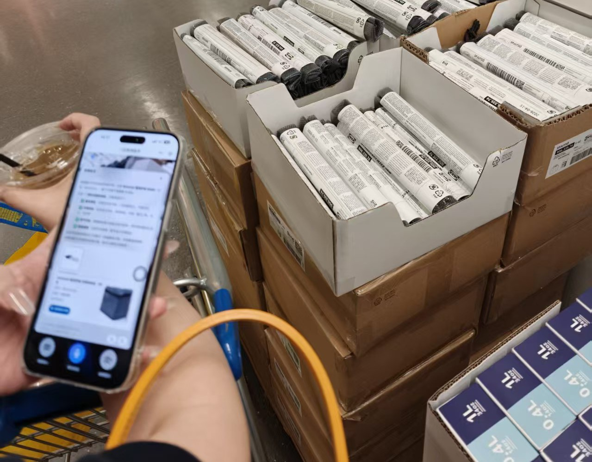
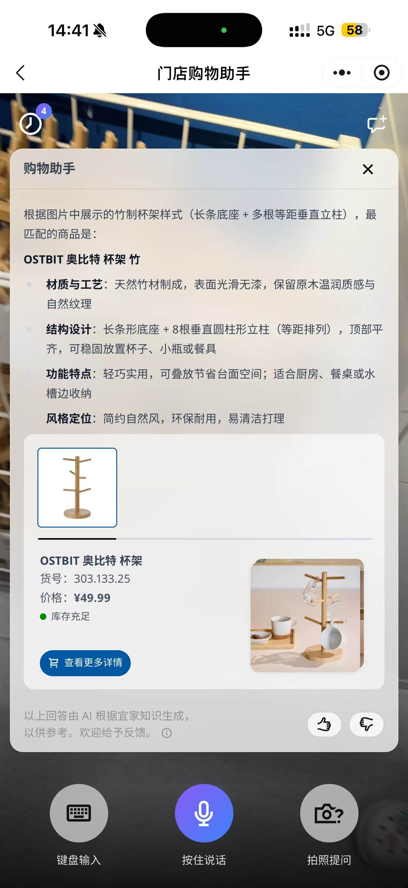
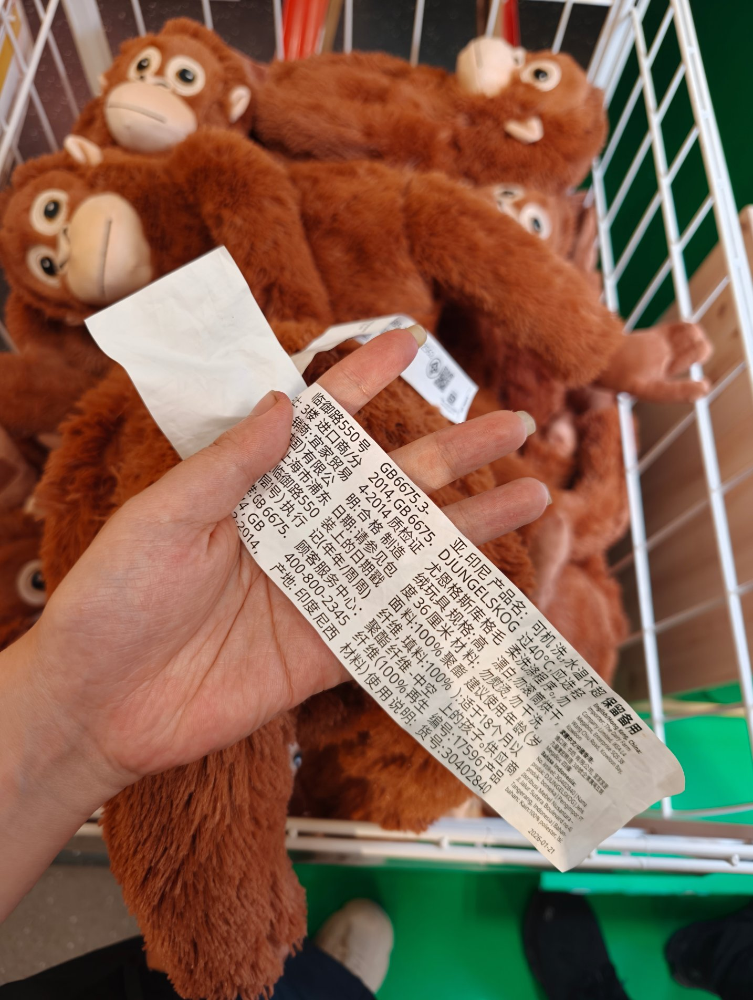
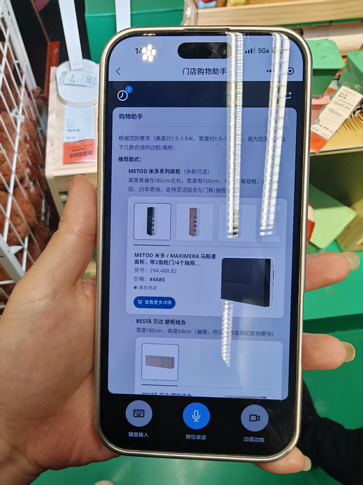
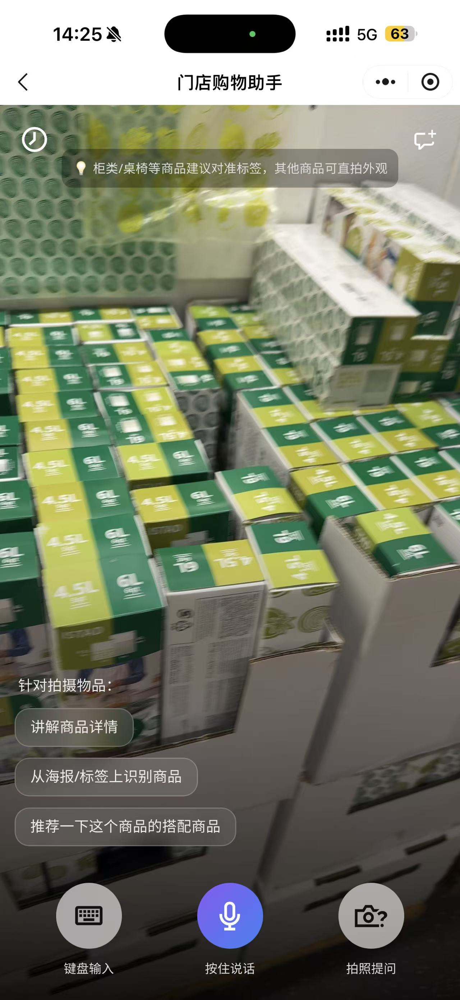
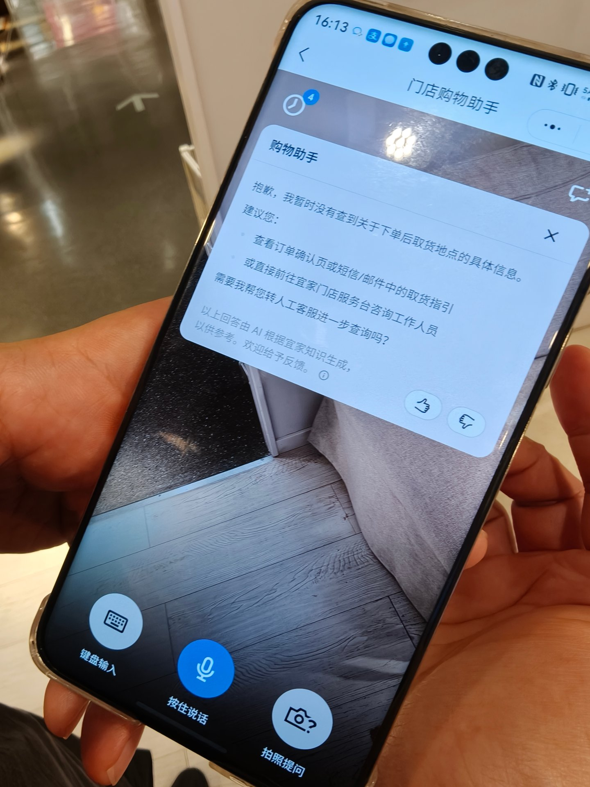
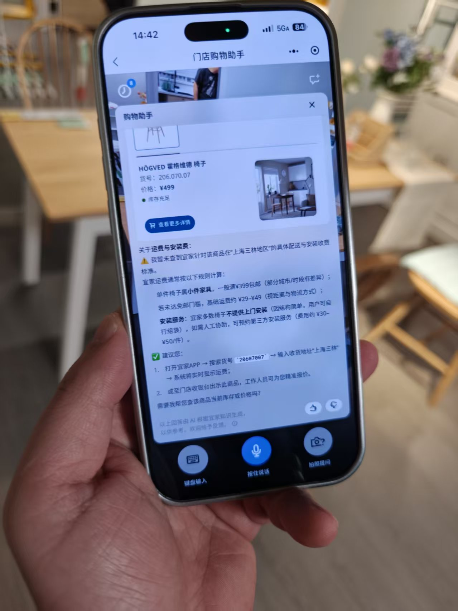

为什么做这次测试？
2026 年 8 月 21 日，我们在上海北蔡宜家门店进行线下实地可用性测试，观察用户在真实逛店动线中如何理解和使用门店 AI 购物助手，并找出体验中最关键的阻碍点。
验证真实使用方式
用户在真实逛店中如何理解和使用 AI 购物助手，与产品设计的预期之间有多大落差？
找出核心卡点
拍照、语音、文字与预设问题四条路径，在门店场景中的主要卡点分别在哪里？
理解真实任务
用户在门店中真正想借助 AI 完成什么任务，AI 的最佳介入方式与边界在哪里？
2026-08-21
14:00 – 17:30
上海北蔡
宜家
4 组
6 位用户
27 个 case
含录音、视频与截图
受访者画像
4 组、6 位用户，带着不同的家庭场景与购物任务进入门店，覆盖多元年龄、购物目的与技术背景。
年轻姐妹 · 20–30 岁
背景：姐姐正在为新家添置小家具和收纳用品；妹妹伴逛，也有自己的购买需求。
典型任务：了解陌生小件的用途，寻找「浴室好物」。
独自逛店的男士 · 50 岁左右
背景：独自逛店，会主动核对商品知识与实际购买条件。
典型任务：询问产地、流明和尺寸，寻找符合空间的柜子，同时关心运费与停车政策。
中年男士 · 30 岁左右
背景：独自逛店，对样板间探索和商品深层信息感兴趣，明确表示不愿在门店阅读长段回复。
典型任务：了解材质与保养，寻找取货点，判断大件商品如何运回家。
妈妈带着小朋友 · 35–45 岁
背景：目标明确，到店前已测量房间尺寸，并准备了手绘布局。
典型任务：为之前购买的上下床寻找匹配床垫，并判断家具是否适合儿童房。
六大核心痛点
从用户行为、现场原声与界面证据中提炼的主要阻碍，覆盖识别、理解、节奏、引导、语音与门店知识六个方面。
识别结果频频出错，答案也不可靠
AI 将实物识别成其他商品，甚至给出与标签相悖的错误事实。



听见用户怎么说了，却没理解真正需求
用户用生活场景、用途和空间条件表达需求，系统仍按商品关键词和标准属性进行匹配。
- 用户说「浴室好物」无结果，换成「浴室收纳物品推荐」后，AI 才能回答
- 用户要高、宽都约 1.5–1.8 米的柜子，推荐结果只满足其中一维
- 拍标签后识别出正确 SKU，用户想知道的是用途与深层信息，系统默认只给价格和货号


等太久，字太多——打断逛店节奏
用户希望边走边获得答案，AI 的思考时间与长段回复迫使用户停下来盯着手机，错过逛店的节奏与沿途的商品。
- 长时间思考 → 用户在货架前停下等待
- 长段文字回复 → 用户被迫盯着屏幕逐行阅读
- 结果 → 逛店节奏被打断，错过沿途的商品与风景
预设入口被忽视——用户习惯先拍照后想问题
页面提供了「讲解商品详情」「从海报/标签上识别商品」「推荐搭配商品」等预设问题，但用户通常直接拍照，没有意识到需要先选择意图；拍摄后没有自动推荐问题，用户需要自己思考接下来问什么。
- 选择预设问题
- 拍摄商品
- AI 回答
- 直接拍照
- 语音 / 打字输入
- AI 回答


语音输入失控——该听时不听，不该听时乱听
- 长按「按住说话」没有明确反馈，用户不知道系统是否开始收音
- 语音转文字不完整，或识别成其他内容
- 切换回键盘输入后，麦克风仍持续收音，把环境声音自动填入输入框
只懂商品，不懂这家店
用户从了解商品转向询问位置、取货、运费、配送和停车时，AI 经常无法给出有效答案。
- 下单后问去哪里拿货，系统没查到取货地点，建议看订单或咨询人工
- 问住在三林的运费，AI 没有回复
- 问停车场收费政策，AI 回复不出来


关键洞察与产品方向
顾客不是在完成一次问答，而是在推进一次购物。沿着从进店到离店的旅程，观察每一步需要怎样的支持。
从「人适应工具」到「AI 理解人和现场」
优化前 · 以商品识别为中心的问答助手
- 操作路径和预设问题先于用户的真实意图
- 识别错误、空结果或答非所问后缺少有效承接
- 能返回商品信息，却难以理解用户所处的购物情境
优化后 · 以购物任务为中心的门店助手
- 意图优先：让用户自然地拍、说、问
- 可信可恢复：主动确认、纠错并承接失败
- 答案可行动：结合商品与现场给出明确下一步
下一步计划
从基础可用性出发，到完整门店任务支持，再到家庭空间适配探索，分三阶段落地。
基础可信可用
先解决识别、提问与等待体验的基础问题
- 识别与理解：提升准确率，理解生活化表达；失败时引导拍标签或调整问法
- 回答与反馈：先答用户所问，结论先行；缩短响应并显示处理状态
- 拍照引导：拍照后提供贴合商品的口语化快捷问题
- 语音输入：修复开始、结束与误收音状态
门店任务
支持完整的门店购物行动闭环
- 补齐位置、库存、取货、运费、配送、组装和停车等门店信息
- 门店问题直接给出结论、位置或路线及明确下一步
- 空结果提供替代方案；支持用商品号或订单截图寻找配件
空间适配
探索家庭场景的轻量空间判断
- 理解房间照片、关键尺寸和家庭场景
- 判断商品能否放下、是否适合，并推荐少量匹配商品
- 复杂规划连接 IKEA 现有工具或专业服务